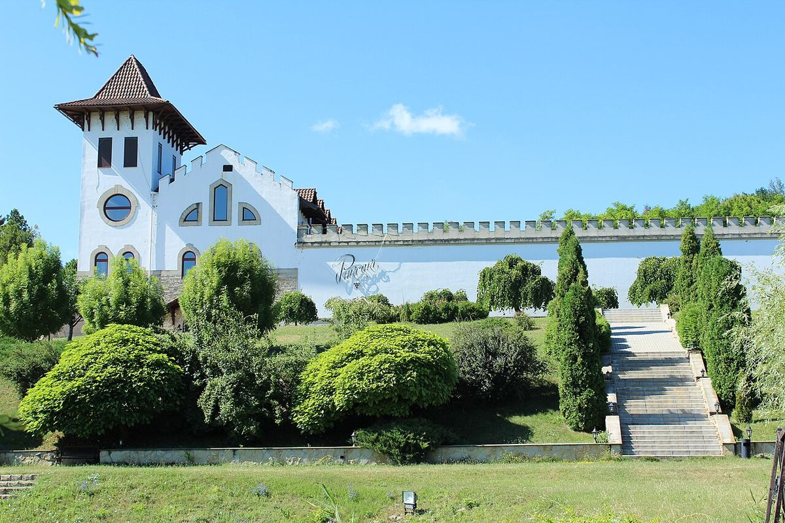

ROSSO
Cantina storica della Moldavia sud-orientale, fondata nel 1827 vicino al fiume Dnestr, nella zona di Ștefan Vodă, e nota per il rosso Negru de Purcari.

Purcari si trova nell’omonimo villaggio, nel distretto di Ștefan Vodă, nella Moldavia sud-orientale, vicino al fiume Dnestr e a poca distanza dal Mar Nero. La cantina fu fondata nel 1827, quando la regione, l’antica Bessarabia, faceva parte dell’Impero russo, e agli inizi si avvalse di specialisti stranieri, in particolare francesi. È una delle cantine più antiche del paese.
I vigneti di Purcari si trovano nell’indicazione geografica Ștefan Vodă, una delle tre zone vinicole protette della Moldavia, apprezzata soprattutto per i rossi. Il clima è continentale, mitigato dalla vicinanza del Mar Nero e della valle del Dnestr, e i suoli sono soprattutto chernozem. Oltre a vitigni internazionali come Cabernet Sauvignon, Merlot, Malbec, Chardonnay o Sauvignon Blanc, si coltivano uve della tradizione locale come la Rara Neagră, la Fetească Albă e la Fetească Neagră, e il georgiano Saperavi.
Il suo vino più celebre è il Negru de Purcari, un rosso da invecchiamento che unisce Cabernet Sauvignon, Saperavi e Rara Neagră e la cui tradizione risale all’Ottocento. La gamma comprende anche il Rosu de Purcari e l’Alb de Purcari, oltre a linee di vini varietali. Dopo un periodo di declino in epoca sovietica, la cantina è stata rinnovata all’inizio del XXI secolo e oggi unisce il suo patrimonio storico, con un edificio in stile castello, a impianti moderni e a un’offerta di enoturismo.
La cantina accoglie visitatori e propone visite alle sue strutture storiche, degustazioni e alloggio; è consigliabile informarsi e prenotare in anticipo.